Префектура Киото · Симогё · еда
Kinobu: киотский рётэй, где кайсэки подают к вину, а акулий плавник к кунжутному тофу
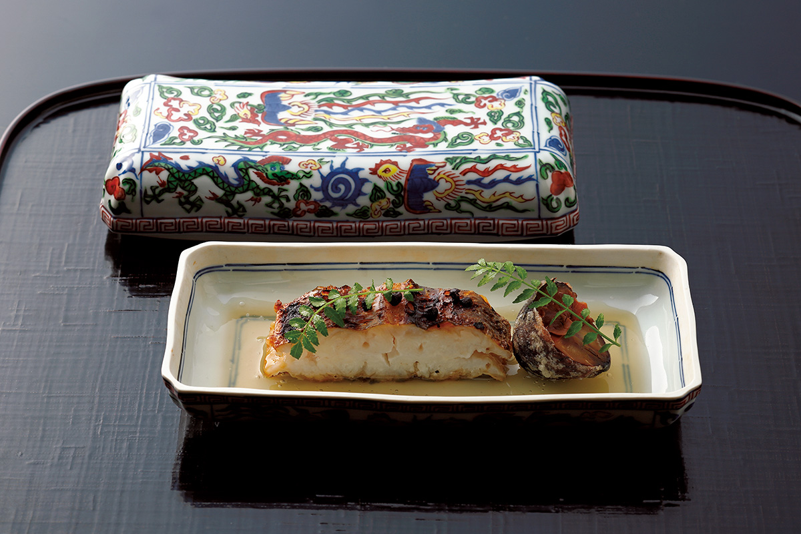
В городе, где рестораны ведут счёт веками, рётэй Kinobu с 1935 годом считается почти новичком. Его хозяева превратили это в преимущество: здесь первыми в Киото стали подавать кайсэки к вину и придумали блюдо, которое гости сначала принимали за китайское.
История
Из лавки готовой еды в рётэй
В 1935 году на улице Синмати, чуть южнее перекрёстка с улицей Букко-дзи, открылась крошечная лавка площадью около десяти татами. Её основатель учился ремеслу в рётэе, который поставлял блюда императорскому двору, и сначала занимался только сидаси: готовил еду и развозил её заказчикам. Работал он без устали, а соседи-торговцы, дела у которых шли в гору, просили место, где можно собраться за столом. Так у лавки появились свои залы, примерно на десять мест. После войны заведение переехало на нынешнее место, разрослось и вошло в число известных ресторанов города.
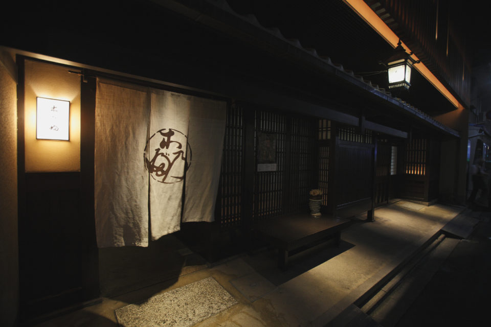
Второе поколение хозяев переделало почти все отдельные комнаты: вместо сидения на татами в них устроили хорикотацу, низкий стол с углублением в полу, под которым можно вытянуть ноги. Тогда это было редкостью. Идею хозяин привёз из ресторана в префектуре Ниигата: там на втором этаже стоял круглый стол над таким углублением, а из окна был виден сад.
«Отцу так понравилась та комната, что он воссоздал её здесь, в нашем отдельном флигеле»
Такудзи Такахаси, хозяин Kinobu
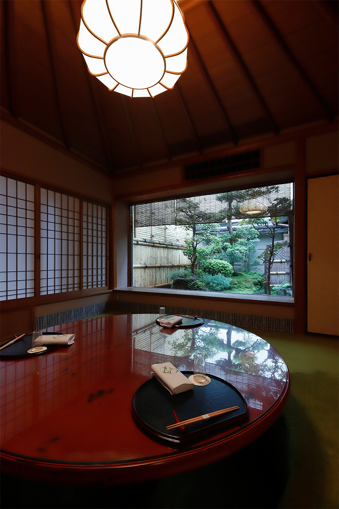
Гостям новые места понравились не меньше. Kinobu стоит в одном из кварталов, которые выставляют платформы на праздник Гион-мацури, и в дни праздника ресторан каждый год работает на пределе сил. Но как только праздник заканчивался, хозяева брались за следующую комнату, и так одну за другой. Сегодня хорикотацу есть во многих ресторанах, а здесь их завели раньше всех, по словам нынешнего хозяина, «наверное, из духа первопроходцев». В Киото есть заведения, которым несколько сотен лет, и рядом с ними рётэй, открытый в 1935 году, выглядит молодым. Именно поэтому новое здесь стало сильной стороной.
Хозяин
Третье поколение: Такудзи Такахаси
Главную роль в этой истории играет Такудзи Такахаси, хозяин в третьем поколении. Пять лет он учился в токийском ресторане Kitcho, а в свободное время ходил по известным французским ресторанам и сам разбирался в вине. Вернувшись в семейное дело, он придумал кайсэки, которое сочетается с вином. В Киото тогда такого не было. После долгих проб он стал класть меньше сладкого мирина и добавлять в блюда немного жира, и вино зазвучало с ними в лад. Это случилось примерно за четверть века до 2021 года, и, возможно, стало первым сигналом перемен, которые потом прошли по всей японской кухне.
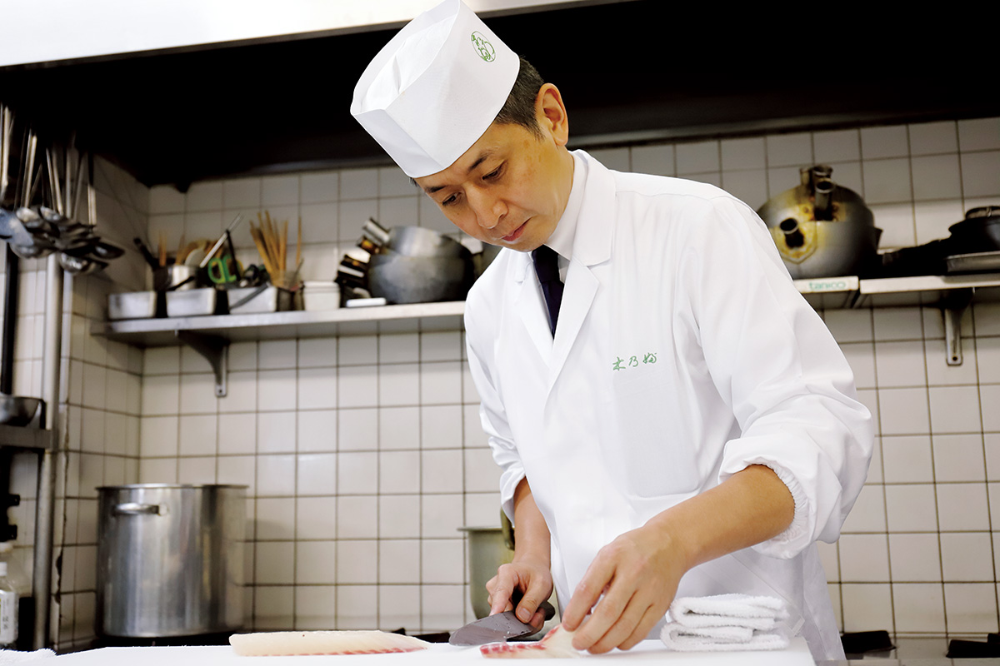
Перемены он вносит и в залы. По его просьбе сделали маленькую комнату «Ботан» с красивым лакированным столом и приглушённым светом, словно по эссе «Похвала тени» писателя Дзюнъитиро Танидзаки (1886–1965), который воспевал полумрак японского дома. В Kinobu все залы отдельные. В 2021 году здесь поставили перегородки из акрила, следили за проветриванием и старались, чтобы гости не встречались друг с другом у входа.
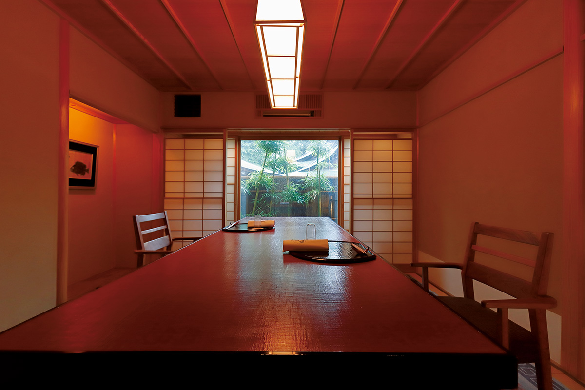
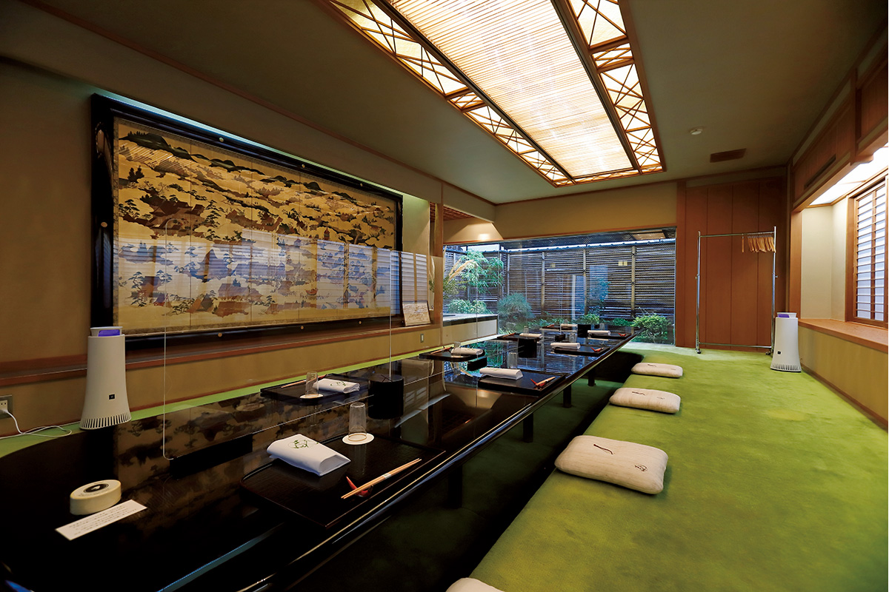
Фирменное
Акулий плавник с кунжутным тофу
Самое известное блюдо Kinobu, акулий плавник с кунжутным тофу в глиняном горшке, родилось из простого вопроса: почему акулий плавник считают китайской едой? Каждый раз, когда хозяин подавал блюда с плавником, гости говорили: «Прямо как в китайском ресторане». Но плавник добывают в японском порту на северо-востоке страны, и Такудзи Такахаси решил, что ничто не мешает сделать его частью японской кухни.
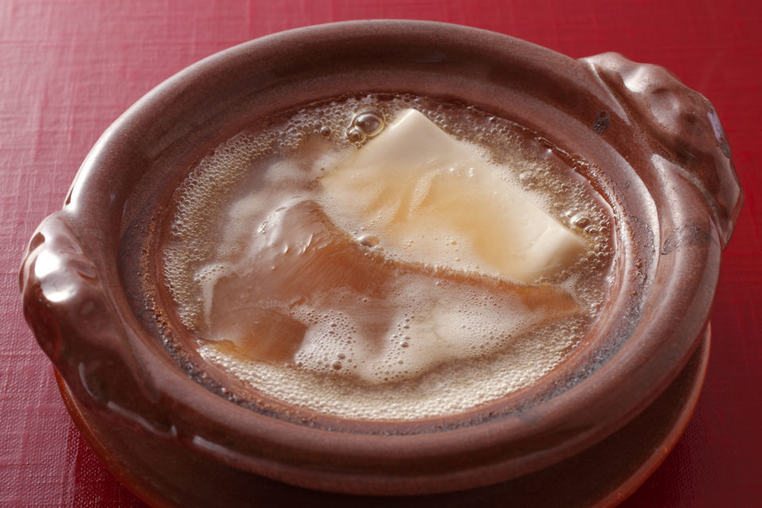
После многих проб к плавнику он выбрал кунжутный тофу. Бульон варил из китайской ветчины цзиньхуа, водорослей комбу и куриных костей, а приправлял сакэ и светлым соевым соусом. У Kinobu уже было фирменное блюдо основателя, рис на пару под прозрачным соусом, и плавник сначала тоже подавали как блюдо на пару. Гостям нравилось, но сам повар был недоволен.
«Я хотел подавать его горячим, но тогда кунжутный тофу таял. Приходилось подавать чуть тёплым»
Такудзи Такахаси
Он стал заново придумывать кунжутный тофу, который выдержит жар. Решило дело сито. Обычно массу протирают через конский волос или ткань, а он взял тонкую металлическую сетку. Крахмал из корня кудзу после неё схватывается крепче, и тофу больше не расплывается.
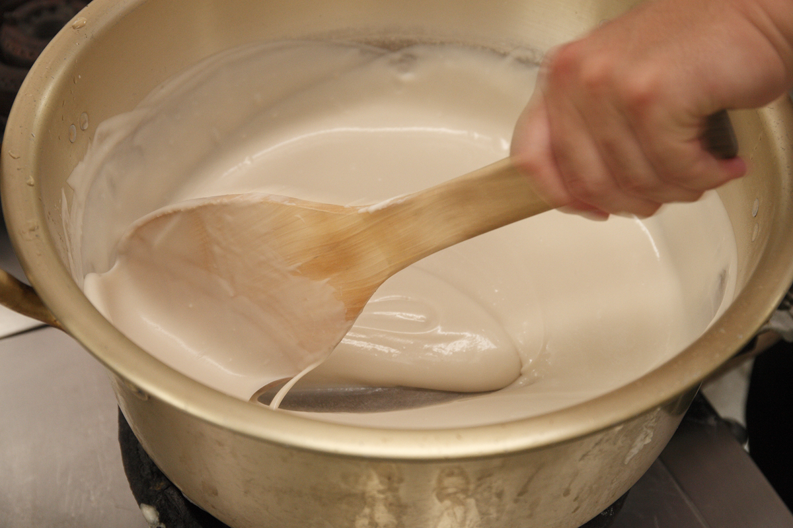
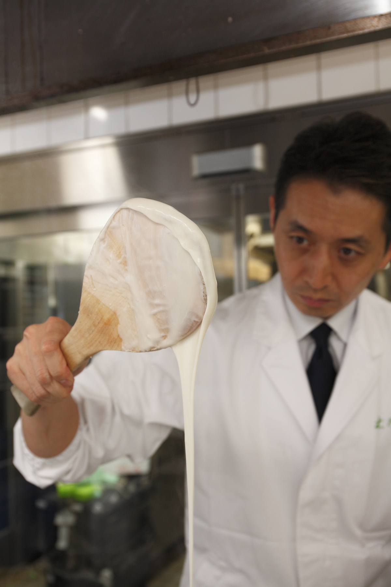
«На полпути пришлось думать как учёный»
Такудзи Такахаси
Когда блюдо стало подаваться в горшке, повар сам сделал кунжутный тофу на лучшем крахмале кудзу, а позже перевёл бульон на ветчину и другие продукты животного происхождения. В мире, где бульон всегда варят из тунца кацуобуси и комбу, этот шаг показал, что даже основу можно менять. К 2017 году блюдо подавали уже больше 25 лет.
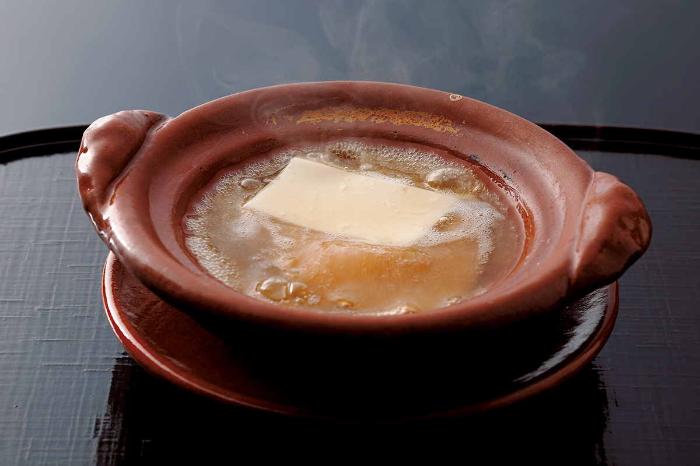
«Когда придумываешь новое блюдо, неудач не бывает. Ты просто продолжаешь, пока не получится»
Такудзи Такахаси
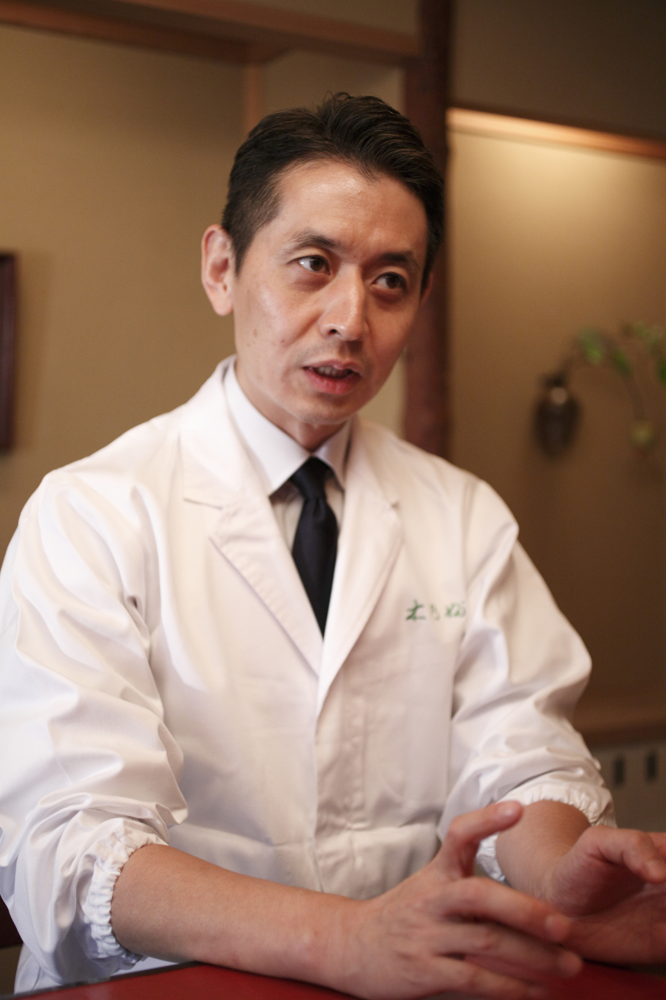
Меню
Кайсэки с французскими приёмами
Около 2005 года Такудзи Такахаси вместе с хозяевами старых киотских рётэев начал встречаться с французскими поварами, и это заметно в нынешнем меню. Сентябрьская закуска из баклажана камо-насу и морского ежа с острова Авадзи построена на французской основе.
«Сочного морского ежа я захотел использовать как французский соус. Подсаливаю его, чтобы вкус стал гуще, и соединяю с баклажаном»
Такудзи Такахаси
Мясистый камо-насу обычно сначала жарят в масле, а потом запекают. Но японскую кухню во всём мире ценят как здоровую, и повар думает об этом всё больше, поэтому обходится без масла: баклажан дважды печёт на углях.
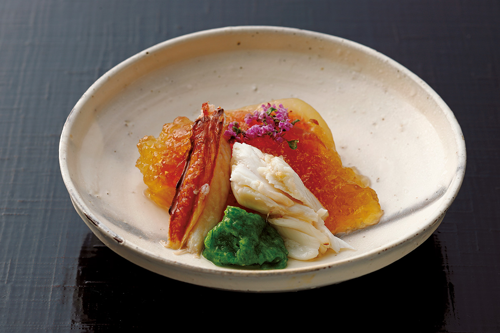
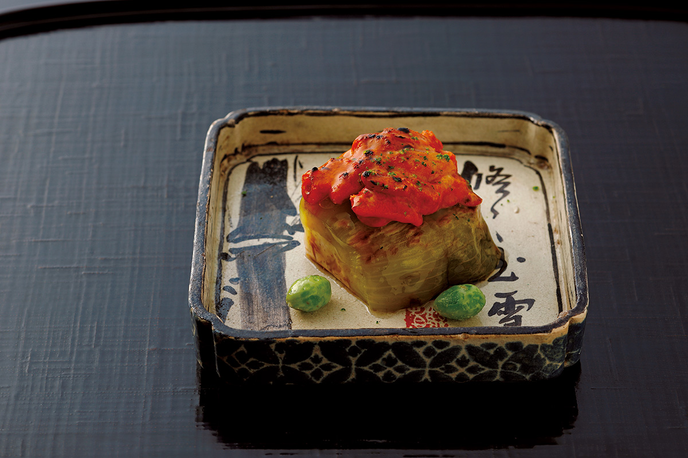
Французский приём есть и в другой закуске, инжире с крабом под желе. Внутри у инжира пустота, и из неё откачивают воздух, чтобы плод впитал бульон.
«Откачивать воздух, чтобы собрать вкус продукта, я научился у французов. И желе тоже появилось после встреч с французскими поварами»
Такудзи Такахаси
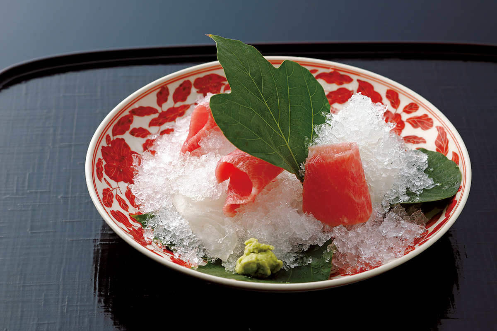
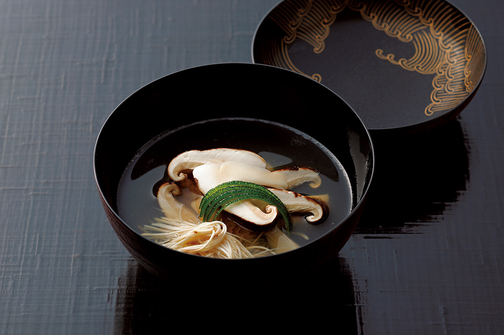
По словам хозяина, время, когда повара прямо переносили в кайсэки чужие приёмы, «пока улеглось». Теперь, считает он, начался следующий этап: брать из других кухонь технику, элементы и настроение и строить из них новое кайсэки. Рамки у этого поиска чёткие. Предшественники передавали кайсэки по наитию, а сегодня его можно описать цифрами: во всём обеде около 1000–1200 ккал, весит он около килограмма, и на 80% состоит из воды.
Перемены коснулись и десерта. Раньше в конце кайсэки подавали только свежие фрукты, а в Kinobu их сменили красивые десерты.
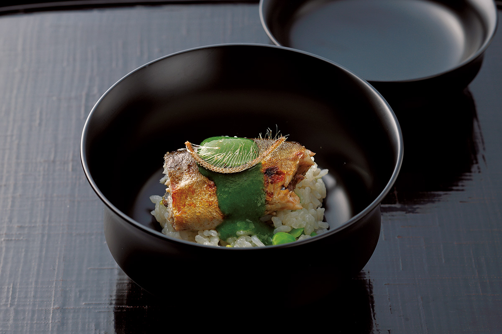
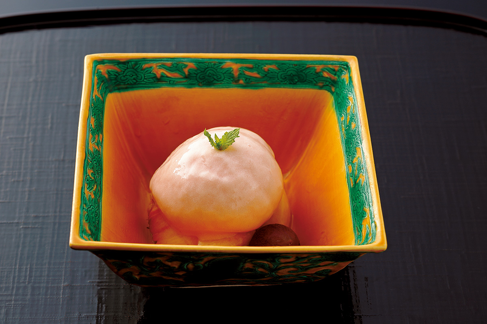
Вино
«Сифуку»: вино без года
Дух первопроходцев есть и у нынешнего хозяина. Вместе с винодельней Manns Wines он три года создавал японское белое вино к кайсэки и назвал его «Сифуку». Года урожая на бутылке нет нарочно.
«Мы думали и о чайной церемонии. Там собирают прекрасную утварь, но никто не спрашивает, какого она года. Её рассматривают и додумывают остальное сами. Эту японскую привычку мы перенесли и на вино»
Такудзи Такахаси
Название тоже из мира чая: сифуку называют мешочек, в котором хранят чайную утварь.
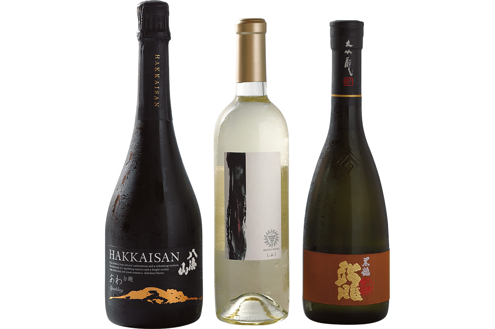
Навынос
Сидаси и баночки к столу
Готовую еду на заказ Kinobu развозит со времён основателя, и в 2020 году выбор стал ещё шире. Ходить в рестораны тогда было трудно, постоянные гости заказывали самые разные блюда, и чтобы отвечать на их просьбы, на кухне стали варить уже семь видов бульона. Летом 2021 года по просьбе гостей «дать вкус, который можно есть дома» здесь начали продавать еду в баночках. Состав меняется по сезону, а комбу в сладком соевом соусе после многих проб получается мягким и округлым на вкус.
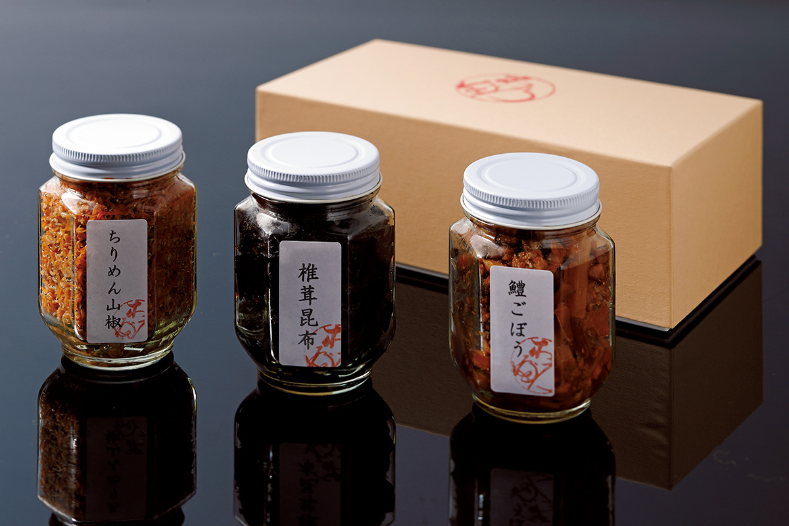
«Дальше я хочу вместе с другими поварами Киото делать рестораны, которые идут в ногу со временем»
Такудзи Такахаси
Повара старых киотских ресторанов много общаются друг с другом, и на этой опоре держится японская кухня с её культурой.
Kinobu
- Адрес
- префектура Киото, город Киото, район Симогё, Синмати-дори Букко-дзи-сагару, Иватояма-тё, 416
- Телефон
- +81 75-352-0001
- Часы работы
- 12:00–15:00 (последний заказ 13:00), 18:00–21:30 (последний заказ 19:00), только по предварительной записи
- Выходные
- среда
- Цены / Вход
- кайсэки 18 700, 24 200, 29 700 и 35 200 иен, кайсэки к вину от 35 200 иен, постная кухня сёдзин от 24 200 иен; в будни днём кайсэки 8 800 и 13 200 иен; бэнто и бэнто с собой от 5 400 иен, выездная кухня от 22 000 иен (с налогом, плюс 15% за обслуживание, 2026)
- Сайт
- kinobu.co.jp
Фото: Тосихико Такэнака.